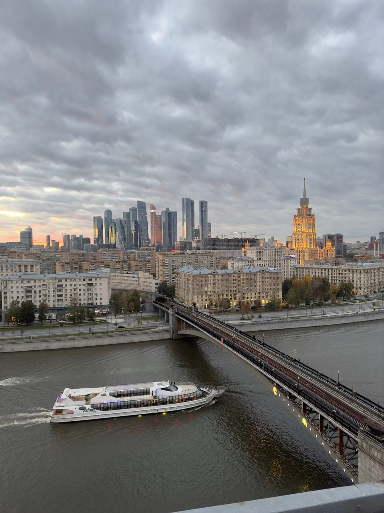
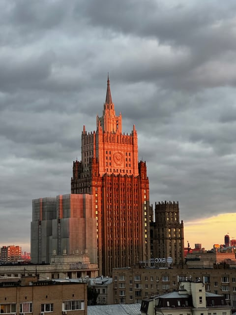
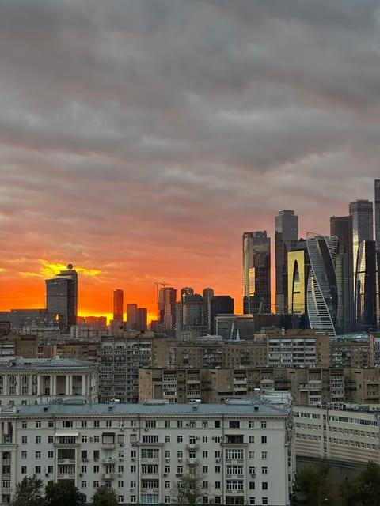
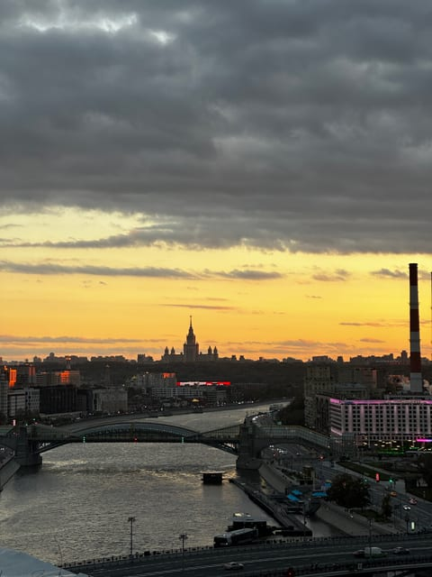
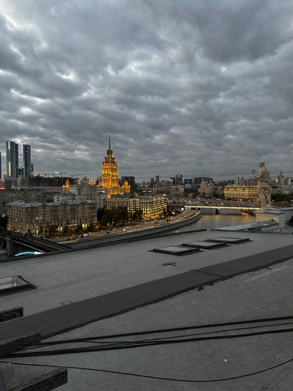
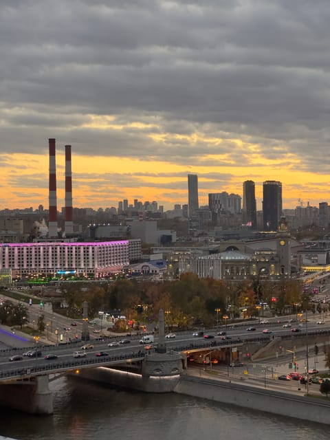
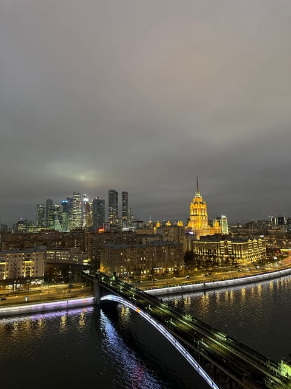

Высотка МИД и река
Крыша на Смоленской
Высотка МИД неподалёку, а с другой стороны — Москва-река с мостами и теплоходами, за ней гостиница «Украина» и башни Москва-Сити.
Эту крышу мы сейчас не предлагаем — посмотрите другие в каталоге.
Что видно с этой крыши
Главный сосед этой крыши — высотка Министерства иностранных дел. Она стоит неподалёку и хорошо видна над крышами соседних домов, а с зумом телефона её можно снять крупным планом: ступенчатые ярусы, герб СССР на башне и шпиль. На закате фасад подсвечивается тёплым медным светом.
В другую сторону открывается Москва-река. По ней ходят прогулочные теплоходы, через неё переброшены мосты — с крыши хорошо виден Бородинский мост с потоком машин и Киевский вокзал за ним. На том берегу стоит гостиница «Украина», а за ней поднимаются башни Москва-Сити.
Вдоль реки панорама уходит далеко: на горизонте, если воздух прозрачный, читается силуэт ещё одной сталинской высотки. Передний план — кварталы старой застройки и набережные.
Когда лучше приходить
На закате и после него. Солнце садится в стороне делового центра: небо за башнями Сити разгорается оранжевым, а высотка МИД ловит последний свет. Потом включается подсветка — светятся мосты, набережная и гостиница «Украина», а в реке появляются отражения. Даже в пасмурный день вид не пропадает: низкие облака делают панораму драматичной.
Кому подойдёт
Тем, кто хочет увидеть в одной прогулке сразу несколько символов Москвы: сталинские высотки, реку и современный деловой центр. Хороший выбор для фотосессии на фоне МИД или вечерней набережной и для свидания под огни города. Крыши, где Сити — главный герой кадра, мы сравнили в статье «Откуда лучший вид на Москва-Сити».
Как попасть
Подняться можно только вместе с сопровождающим: мы встречаемся у дома в назначенное время, поднимаемся и коротко объясняем правила на площадке. Точный адрес и точку встречи присылаем после подтверждения записи — заранее их не публикуем. Что взять с собой: удобную нескользящую обувь и тёплый слой, вечером на высоте прохладнее, чем на улице. Подробнее — в гиде «Как попасть на крышу в Москве».
Фотографии
Кадры с этой крыши
Все снимки сделаны нами на этой локации — они показывают, что реально видно с точки.







FAQ
Вопросы про эту крышу
Насколько близко отсюда высотка МИД?
Недалеко: она хорошо видна над крышами соседних домов — со шпилем и ступенчатыми ярусами, а с зумом телефона её можно снять крупным планом. На закате её фасад подсвечивается тёплым светом.
Видна ли отсюда Москва-Сити?
Да. Башни делового центра стоят на горизонте за рекой рядом с гостиницей «Украина» и попадают в большинство наших кадров с этой точки. На закате небо разгорается как раз за ними.
Чем эта крыша отличается от Киевской Скатной?
Ракурсом. Здесь гостиница «Украина» и Сити видны через Москву-реку — с мостами, набережной и теплоходами на переднем плане, а неподалёку видна высотка МИД. Киевская Скатная — скатная крыша у Киевского вокзала, вид там другой.
Над городом